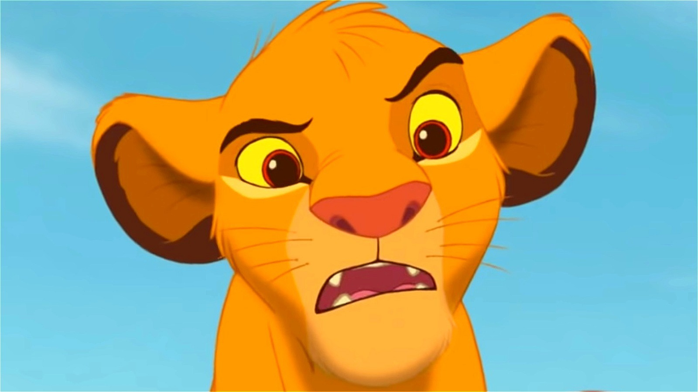

About Simba
Simba is a fearless lion that is taught various lessons from his father, Mufasa before he is killed. Simba grows up to be a humble hero.
Simba as a cub
Characteristics
- He is fearless.
- Simba has morals that were instilled by both of his parents, Sarabi and Mufasa.
- Simba always maintained a playful, but humble personality.
Friends

Simba and his friends
Simba's Friends
Simba's best friends are Timon and Pumbaa. They are there from the beginning when Simbaa was banished from The Pride Lands. Click on the links below to read more about them.